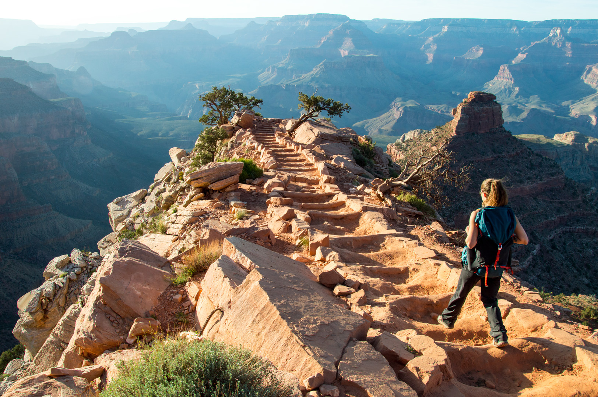

Hiking Trails: Exploring Nature One Step at a Time

"Take only memories, leave only footprints."
Hiking is one of the best ways to reconnect with nature and embark on a journey of self-discovery.
Whether you prefer serene forest trails, challenging mountain ascents, or scenic lakeside paths,
each hike offers an adventure filled with breathtaking views and a sense of tranquility.
The image above captures the essence of hiking—an explorer venturing along a rugged mountain trail,
surrounded by lush greenery and a stunning view of a distant lake. With every step, hikers experience
the refreshing mountain air, the rustling of leaves, and the thrill of reaching new heights.
Hiking is more than just a physical activity; it's a way to escape the noise of everyday life and immerse
oneself in the beauty of the outdoors. Whether you’re a seasoned trekker or a beginner, the trails are
always ready to welcome you. Lace up your boots, pack your essentials, and set off on your next adventure!
Hiking Destinations
- Top Hiking Trails Worldwide – Iconic trails like the Appalachian Trail (USA) and the Inca Trail (Peru) offer diverse experiences.
- The Appalachian Trail stretches over 2,190 miles, taking hikers through picturesque forests and mountains.
- The Inca Trail leads to the breathtaking ruins of Machu Picchu, offering a mix of history and stunning landscapes.
- Best Hiking Spots for Beginners – Beginner-friendly trails such as Mount Takao (Japan) and Lanikai Pillboxes (Hawaii) offer gentle slopes and short treks.
- Mount Takao provides a scenic and cultural hike near Tokyo, featuring temples and nature views.
- Lanikai Pillboxes in Hawaii offers short yet rewarding hikes with panoramic ocean views.
- Unique Trails with Breathtaking Views – Coastal hikes, mountain paths, and canyon routes showcase dramatic landscapes.
- The Pacific Coast Trail spans the US West Coast, featuring coastal cliffs, forests, and deserts.
- The Dolomites (Italy) offer stunning alpine scenery with jagged peaks and lush valleys.
- The Grand Canyon Rim-to-Rim Trail (USA) presents a challenging yet awe-inspiring hike through one of the world’s most famous natural wonders.
Trail Preparation
- Essential Gear for Hiking – Choose a sturdy backpack with adjustable straps and enough storage for your essentials.
- Wear moisture-wicking, weather-appropriate clothing to stay comfortable in varying conditions.
- Invest in high-quality hiking boots with proper grip to prevent slips and provide ankle support.
- Carry trekking poles for stability, a headlamp for low-light conditions, and a first aid kit for emergencies.
- Safety Tips – Always stick to marked trails and carry a map or GPS for navigation.
- Stay hydrated and pack extra water to avoid dehydration.
- In case of wildlife encounters, keep a safe distance, avoid sudden movements, and never feed animals to prevent disrupting their natural behavior.
- Planning Multi-Day Hikes – Pack lightweight, high-calorie food options like energy bars and dehydrated meals.
- Include a portable stove if cooking is needed for extended hikes.
- Carry compact shelters like tents or bivy sacks for overnight stays.
- Ensure you have weather-proof sleeping gear for protection against the elements.
- Research the trail thoroughly and share your itinerary with someone before setting out.
Nature Exploration
- Discovering Hidden Gems – Embark on lesser-known trails like Mount Rinjani in Indonesia, the Fairy Pools in Scotland, or the Drakensberg Mountains in South Africa for unique and breathtaking landscapes.
- These hidden gems often offer solitude and unparalleled natural beauty.
- Experience diverse terrain, from volcanic peaks to lush valleys and crystal-clear pools.
- Observing Flora and Fauna – Hiking trails present opportunities to spot diverse wildlife, from colorful birds and butterflies to mammals and reptiles.
- Take time to appreciate native plant species like wildflowers, ferns, and towering trees that enrich the trail experience.
- Bring binoculars or a field guide to identify different species along the way.
- Eco-Friendly Hiking Practices – Adopt responsible practices like "Leave No Trace" by packing out all trash and staying on designated trails to prevent erosion.
- Support conservation efforts through eco-tourism initiatives.
- Respect local wildlife by maintaining a safe distance and avoiding loud noises.
- Protect and preserve the environment for future generations to enjoy.
Hiking Challenges
- Overcoming Physical Challenges on Tough Trails – Build endurance and strength through regular cardio and strength training exercises before embarking on challenging hikes.
- Take breaks, stay hydrated, and pace yourself to avoid fatigue on strenuous paths.
- Gradually increase hike difficulty to adapt your body to tougher terrains.
- Tips for Hiking in Extreme Weather – In hot conditions, wear breathable clothing, apply sunscreen, and carry plenty of water to prevent dehydration.
- For cold weather, layer appropriately, protect extremities from frostbite, and keep energy levels up with high-calorie snacks.
- Always monitor weather updates and be prepared to adapt your plans.
- Navigating Trails with Difficult Terrain – Use trekking poles for stability on rocky or uneven trails.
- Pay close attention to footing, especially on steep or loose surfaces, and wear appropriate footwear with good traction.
- Study the trail map beforehand to anticipate challenging sections and plan accordingly.
- Hike with a group or inform someone of your route for added safety.
Family and Group Hiking
- Kid-Friendly Trails – Opt for shorter and easier trails with gentle slopes, like local nature parks or loop trails with interesting features such as waterfalls or wildlife.
- Choose trails that keep children engaged and make the experience enjoyable for the entire family.
- Pack snacks, extra water, and engage kids with fun activities like scavenger hunts along the trail.
- Hiking with Pets – Ensure your pet is fit for hiking and pack essentials like water, snacks, a leash, and waste bags.
- Avoid overly rocky or steep trails and take regular breaks to keep your pet safe and comfortable.
- Check park regulations beforehand to confirm if pets are allowed on the trail.
- Planning Group Hikes – Coordinate with all members beforehand, set a pace that suits the group, and assign roles like navigation or carrying shared supplies.
- Choose a trail that aligns with everyone’s skill level for a pleasant experience.
- Establish checkpoints or designated meeting spots in case anyone gets separated.
- Encourage teamwork and communication to ensure a fun and safe group adventure.
Adventure Hiking
- Night Hiking – Experience the thrill of exploring trails under a star-lit sky.
- Use headlamps or flashlights for visibility and safety.
- Stay on marked paths to avoid getting lost in the dark.
- Enjoy the peaceful ambiance while listening to nocturnal wildlife.
- Remote Wilderness Hikes – Venture into isolated areas off the beaten path to discover untouched natural beauty.
- These hikes require thorough preparation and self-reliance.
- Pack sufficient supplies, including food, water, and emergency gear.
- Develop a deep appreciation for solitude and adventure in the wild.
- Hiking and Adventure Sports – Combine hiking with activities like rock climbing or kayaking to extend your adventure.
- Scale challenging cliffs and enhance your physical endurance.
- Kayak across serene waters to explore diverse terrains.
- Blend multiple adventure sports for an exhilarating outdoor experience.
Key Aspects of Hiking Trails
| Category |
Details |
| Famous Trails |
Appalachian Trail (USA), Inca Trail (Peru), Camino de Santiago (Spain). |
| Difficulty Levels |
Easy (nature walks), Moderate (day hikes), Difficult (multi-day treks). |
| Essential Gear |
Backpack, hiking boots, water bottle, first aid kit, trail map. |
| Safety Tips |
Stay on marked trails, carry navigation tools, and check weather updates. |
| Eco-Friendly Practices |
Leave no trace, avoid disturbing wildlife, and pack out all trash. |
| Best Seasons |
Spring and fall for temperate climates; summer for alpine trails. |
| Unique Experiences |
Night hikes, coastal trails, and wildlife observation opportunities. |
| Family-Friendly Options |
Short, scenic trails with gentle slopes and interactive features. |
Additional Details About Hiking Trails
| Category |
Details |
| Types of Trails |
Loop trails, out-and-back trails, and point-to-point trails. |
| Trail Features |
Waterfalls, scenic overlooks, dense forests, rocky terrains. |
| Fitness Benefits |
Improves cardiovascular health, builds endurance, strengthens muscles. |
| Popular Trail Activities |
Birdwatching, photography, camping, and geocaching. |
| Navigation Tools |
GPS devices, trail maps, compass, and mobile apps for hikers. |
| Trail Accessibility |
Wheelchair-accessible trails, family-friendly paths, and pet-friendly options. |
| Group Hiking Benefits |
Builds teamwork, encourages social connections, and enhances safety. |
| Trail Conservation Tips |
Minimize trampling, avoid littering, and respect wildlife habitats. |
Conclusion
Hiking is more than just a physical activity; it’s a journey that connects us with nature, challenges our limits, and rejuvenates our mind and body. Whether trekking through rugged mountains, serene forests, or along coastal trails, hiking offers unparalleled opportunities to explore the world’s natural beauty while fostering a sense of adventure and tranquility. It encourages mindfulness, promotes health and fitness, and cultivates an appreciation for the environment. From solo wanderers to families and groups, hiking is a versatile activity that welcomes all, making each trail a path to discovery, growth, and unforgettable experiences. Let the trail guide you to new adventures and cherished memories!
Hiking trails are gateways to the serenity and wonders of nature, offering an intimate experience with the great outdoors, one step at a time. As you navigate through winding paths, lush forests, and towering peaks, you’ll not only witness breathtaking landscapes but also discover a deeper connection with the environment. Hiking challenges both your physical endurance and mental focus, rewarding you with moments of tranquility and awe along the journey. Whether it's a casual stroll or a daring ascent, every trail has a story to tell and a memory to create. Lace up your boots, and let the adventure unfold! 🥾🌲✨